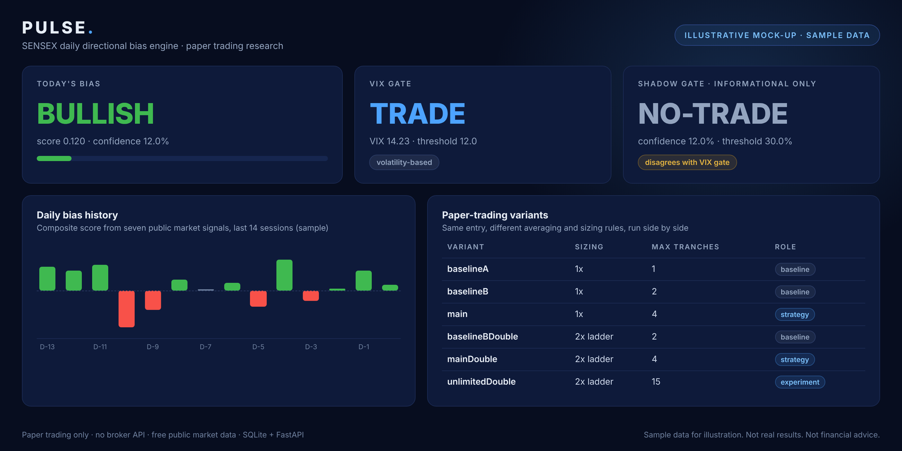

Market data · paper trading
Pulse: daily bias engine
- Scores seven public market signals into one daily SENSEX bias.
- A VIX gate and a second, confidence-based shadow gate are shown side by side.
- A paper-trading engine runs six averaging and sizing variants against the same entry and logs every cycle.
- No broker API. Free public data, SQLite logging and a FastAPI dashboard. Paper trading only.
